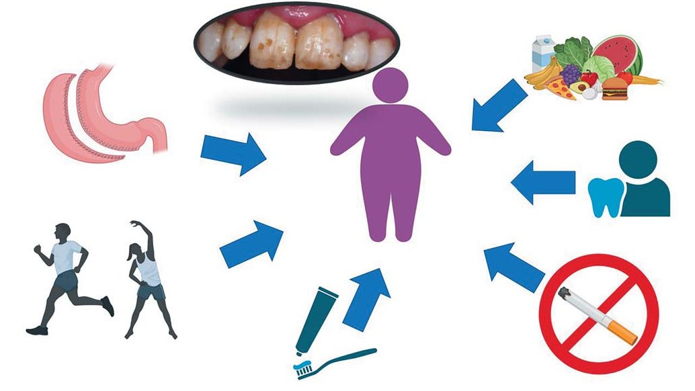

Наука · журнал «ДентАрт» 2024 №2
Пародонтологічний статус осіб молодого віку з ожирінням
Periodontal Status of Young Adults with Obesity
Вступ
Незважаючи на успіхи світової медицини у профілактиці стоматологічних захворювань, кількість осіб, які страждають захворюваннями пародонта, тільки невпинно зростає і є надзвичайно високою.1-3 Поширеність гінгівіту оцінюється приблизно у 50–100 % молодих людей залежно від популяції.4-6 Натепер в Україні відзначається збільшення поширеності захворювань пародонта в осіб молодого віку майже до 74 %.7 В останні 30 років зареєстрований стрімкий ріст частоти генералізованого пародонтиту, особливо у молодих людей.8
У той же час, за даними епідеміологічного дослідження ВООЗ у 2016 році, понад 1,9 мільярда людей, старших 18 років, мали надлишкову вагу, а близько 650 мільйонів дорослих страждали ожирінням. За період з 1975-го по 2016 рік поширеність ожиріння в усьому світі зросла майже втричі і набула статусу неінфекційної пандемії. У минулому проблема ожиріння та надмірної ваги була типовою для країн із високим рівнем доходів населення, але натепер вона стала надзвичайно актуальною і для країн із низьким і середнім рівнем життя, особливо в містах. Надмірна вага та ожиріння все частіше діагностуються у дітей та підлітків віком 5–18 років, їх поширеність різко зросла – з 4 % у 1975 році до понад 18 % у 2016 році.9 За даними ВООЗ (2022), близько 60 % населення Європи мають надмірну вагу та ожиріння, що створює передумови до більш тяжкого перебігу інфекційних та неінфекційних хвороб і, як наслідок, зростання кількості летальних випадків.
На сьогодні клініцисти і вчені визнали й підтвердили зв'язок між ожирінням і захворюваннями періодонту. В останній Класифікації Захворювань і Станів Періодонту і Периімплантатних тканин 2017 року ожиріння було виділено як один із факторів, що має значний вплив на втрату тканин періодонту шляхом модифікації процесу запалення.10 Ожиріння значно ускладнює перебіг ряду соматичних та інфекційних захворювань. Ожиріння і надмірна вага є вагомим фактором ризику виникнення і розвитку численних серцево-судинних захворювань (атеросклерозу, серцевої недостатності, гіпертонічної хвороби та ін.), раку, запально-дистрофічних змін пародонта тощо.11-13 Імовірність ризику їх виникнення та розвитку зростає з підвищенням індексу маси тіла (ІМТ). Ожиріння призводить до формування метаболічних аномалій, дисліпідемії, інсулінорезистентності та хронічного системного запалення із в'ялим перебігом.14,15
За даними ряду наукових досліджень, ожиріння характеризується як стан хронічного субклінічного запалення, що може призвести до загострення хронічних запальних захворювань, у тому числі пародонтиту. Тяжкість запально-дистрофічного процесу в пародонті прямо пропорційна ступеню ожиріння. В умовах надлишку вісцерального та підшкірного жиру адипоцити виділяють у кров численні прозапальні адипоцитокіни: TNF–α, IL–6, які стимулюють продукцію білків гострого запалення, таких як С-реактивний білок, і порушують імунну відповідь організму, підвищуючи сприйнятливість до бактеріальної інфекції.16
Ожиріння було визнане значним фактором схильності до розвитку пародонтиту, а також фактором, що зумовлює тяжкість його перебігу.17-19 Численні епідеміологічні дослідження засвідчили, що більш високі значення ІМТ були пов'язані із захворюваннями пародонта у дорослого населення США, 20 країн Європи,21,22 Японії,23,24 Китаю,25 Єгипту,26 Північної Африки,27 Данії,28 Бразилії,29 Ізраїлю,30 Іраку,31 Ірану.32 У 25–40-річних японців із ожирінням та надмірною вагою частота пародонтиту була в 3 рази вищою порівняно з обстеженими із нормальним індексом маси тіла.24
Ризик виникнення захворювання пародонта та його маніфестація дуже залежать від вікової групи обстежених. Так, у дітей 6–11 років із Камеруну наявність надмірної ваги або ожиріння не мала суттєвого зв'язку з пародонтитом, але впливала на поширеність карієсу.33 Така ж тенденція спостерігалася серед бразильських дітей 8–11 років34 та українських діток 6–12 років.35,36 У японців молодого віку із надмірною вагою кожне підвищення ІМТ на 1 кг/м² збільшує ризик захворювань пародонта на 16 %.37 Бразильські підлітки 12–18 років із ожирінням/надлишковою вагою мали тяжчий перебіг пародонтиту (більшу втрату кісткової тканини та частоту кодів 1 і 3 за індексом CPI), з урахуванням однакового рівня гігієни ротової порожнини, порівняно з обстеженими із нормальним ІМТ.38 Діти віком 12 років із ожирінням при однакових показниках гігієни ротової порожнини з однолітками з нормальною вагою характеризувалися значно інтенсивнішими клінічними проявами гінгівіту.39 В українських дітей з ожирінням віком 6–12 років діагностовано вірогідно більшу інтенсивність гінгівіту порівняно з дітьми із нормальною масою тіла.40
Нелікований гінгівіт в осіб із ожирінням має тенденцію до трансформації в пародонтит, особливо в осіб із хронічними захворюваннями, які впливають на імунну реакцію організму, такими як цукровий діабет, ожиріння, аутоімунні, інші ендокринні захворювання.41-43
Дані щодо залежності захворювань зубів, пародонта від ожиріння, зайвої ваги є загалом дуже неоднозначними. Існуючі наукові дослідження свідчать про наявність зв'язку між зазначеними параметрами. У той же час такі дані здебільшого базуються на епідеміологічному обстеженні популяції дітей чи дорослих, що мають широкий віковий діапазон (8–14, 18–55 років).44-47
Проте механізм виникнення та розвитку патології пародонта в осіб із ожирінням залишається незрозумілим і потребує детального вивчення для створення ефективної стратегії лікування та профілактики захворювань пародонта у пацієнтів з ожирінням. Такий план лікування повинен враховувати передусім етіологічний компонент і патогенез захворювання.
Об'єкти та методи власного дослідження
Нами проведене клінічне, антропометричне обстеження 132 осіб віком 18–22 років української національності. Усі пацієнти були розподілені на чотири групи в залежності від значення індексу маси тіла. Пацієнти першої групи – особи з нормальним значенням ІМТ: 18,5–24,99 кг/м² (n=33), пацієнти другої групи – з надмірною вагою: ІМТ 25,0–29,99 кг/м² (n=36), пацієнти третьої групи – особи з I ступенем ожиріння: ІМТ 30,0–34,99 кг/м² (n=31), четверту групу становили особи з II ступенем ожиріння: ІМТ 35,0–39,99 кг/м² (n=32).
Оцінка стоматологічного статусу обстежених складалася з опитування та об'єктивного обстеження. Результати клінічного обстеження заносилися у картку стоматологічного обстеження. Деталізували скарги на наявність каріозних порожнин, чутливість зубів, кровоточивість ясен під час чищення зубів, наявність зубних відкладень та рухомості зубів тощо. Уточнювали анамнез захворювання і життя з урахуванням спадкових, соціальних та інших факторів виникнення і розвитку захворювання. Обов'язково враховували дані про соматичну патологію, алергологічний анамнез та шкідливі звички.
Об'єктивно стоматологічний статус визначали з використанням стандартного оглядового стоматологічного набору, пародонтального зонда системи Pa-on. Звертали увагу на загальний стан обстежених, шкіру обличчя та шиї, видимих слизових оболонок носа та очей, червоної облямівки губ, регіональних лімфатичних вузлів, скронево-нижньощелепного суглоба. Об'єктивне клінічне обстеження ротової порожнини дозволило визначити стан слизової оболонки рота, слинних залоз, зубних рядів, прикусу, вуздечок язика, губ. Звертали увагу на наявність некаріозних та каріозних уражень зубів, патологічної рухомості зубів, зубощелепних аномалій, лікованих зубів, глибину присінка ротової порожнини. Розраховували інтенсивність каріозного процесу за індексом КПВ.
Оцінку рівня гігієни ротової порожнини робили за допомогою спрощеного ГІ Grenn-Vermilion (OHI-S),48 який визначає наявність зубного нальоту й зубного каменю у фронтальних і бокових ділянках щелеп, та інтердентального індексу APІ (Rateitchak),49 що дозволяє виявити наліт на апроксимальних поверхнях зубів, догляд за якими найскладніший.
Стан ясен оцінювали за наявністю гіперемії, набряку, кровоточивості, ясенних або пародонтальних кишень. Ступінь запалення ясен визначали за допомогою папілярно-маргінально-альвеолярного індексу (РМА) в модифікації С. Parma,50 індексу кровоточивості сосочків Muhlemann-Saxer (PBI),51 комплексного пародонтального індексу (КПІ) за Леусом.52 Для якісної оцінки пародонтологічного статусу використовували пробу Шиллера – Писарєва.52 Гігієнічний стан язика діагностували на основі індексу WTC (Winkel Tongue Coating).53
Результати дослідження
Загальноклінічне обстеження
Середнє значення окружності талії та стегон у пацієнтів 1-ї групи становило 75,67 ± 1,45 см та 98,33 ± 1,42 см відповідно, в осіб 2-ї групи – 83,3 ± 1,85 см та 103 ± 2,25 см, 3-ї групи – 91,82 ± 1,92 см та 114,58 ± 1,3 см, 4-ї групи – 108,23 ± 2,3 см та 121,95 ± 2,24 см відповідно.
У 1-й групі 63,6 % усіх обстежених були вихідцями з великих міст, у 2-й групі – 41,6 %, у 3-й групі – 67,75 %, у 4-й – 62,5 %, решта були родом із сільської місцевості та малих містечок. 76,5 % представників 3-ї групи становили жінки, в інших групах кількість представників обох статей була однаковою. За даними аналізу алергологічного анамнезу, у 31,81 % (n = 42) усіх пацієнтів була алергія (переважно на ліки та харчові продукти). Найбільша поширеність алергії спостерігалася в осіб 4-ї групи – 43,75 % (n = 14).
6 % осіб першої групи зазначили наявність у них серцево-судинних захворювань, у другій групі – 11 %, у третій – 19,3 % і 21,8 % у четвертій. Ендокринологічних захворювань не було виявлено в жодній із груп. Відомості про спадковий анамнез (поширеність деяких захворювань у батьків обстежених пацієнтів) подано в таблиці 1.
| Захворювання | 1 (n = 33) | 2 (n = 36) | 3 (n = 31) | 4 (n = 32) |
|---|---|---|---|---|
| Ожиріння в одного з батьків | 12,12 | 44,44 | 54,83 | 78,13 |
| Ожиріння в обох батьків | 3,03 | 16,66 | 29,03 | 37,5 |
| Цукровий діабет ІІ типу | 9,1 | 8,33 | 12,9 | 15,63 |
| Серцево-судинні захворювання | 12,12 | 19,44 | 19,34 | 9,38 |
| Алергія | 12,12 | 5,55 | 0 | 6,25 |
Примітка: у дужках у цій і наступних таблицях – кількість осіб у групі.
Параметри динамометрії рук не мали достовірної відмінності в осіб різних груп і були такими: у 1-й групі у чоловіків – 47,5 ± 2,2 Н, у жінок – 25,63 ± 1,23 H, у 2-й групі у чоловіків – 49,95 ± 2,29 Н, у жінок – 29,23 ± 2,1 Н, у 3-й групі у чоловіків – 52,5 ± 2,4 H, у жінок – 25,84 ± 1,7 H, у 4-й групі у чоловіків – 47,7 ± 2,4 H, у жінок – 26,22 ± 1,56 H.
Наявність шкідливих звичок (куріння) було констатовано у 29 % людей з нормальною вагою, їхній стаж куріння становив 2,4 ± 0,54 року, кількість сигарет на добу становила 5,4 ± 0,8. У групі із зайвою вагою відсоток осіб, що курять, був 32,65 %, тривалість куріння – 2,3 ± 0,56 року, інтенсивність куріння становила 5,88 ± 0,76 сиг/добу. У третій групі відсоток обстежених, що мають шкідливу звичку, був 29,41 %, тривалість куріння 2,6 ± 0,74 року, інтенсивність – 5,4 ± 1,05 сиг/добу. В осіб із другим ступенем ожиріння відсоток осіб, що курять, сягав 30 %, стаж куріння – 2,3 ± 0,42 року, частота становила 10,8 ± 2,1 сиг/добу. Початок куріння для значної більшості реєструвався у 17–18 років, що пов'язано зі стресовими факторами, такими як закінчення школи і вступ до університету. Не виявлено гендерної різниці осіб, що мають шкідливу звичку куріння.
Оцінка стоматологічного статусу
Загальноприйняте стоматологічне обстеження осіб досліджуваних груп засвідчило, що, за даними анамнезу, регулярно (двічі на рік і частіше) відвідують стоматолога 39,4 % пацієнтів 1-ї групи, 57,6 % 2-ї, 42,42 % 3-ї та 75,0 % 4-ї груп. Інші представники груп звертаються до стоматолога лише за наявності гострого болю.
Поширеність патології прикусу становила 48,5 % у пацієнтів 1-ї групи, 44,4 % – 2-ї групи, 54,8 % – 3-ї групи і 62,5 % – 4-ї групи.
Аномалії розвитку м'яких тканин ротової порожнини (усічена вуздечка язика, мілкий присінок рота) виявлені у 6,0 % пацієнтів 1-ї групи, 13,9 % – 2-ї, 12,9 % – 3-ї та 9,4 % 4-ї груп.
Захворювання слизової оболонки ротової порожнини та губ констатовані в середньому у 22,0 % (n = 29) усіх обстежених. Так, у представників 1-ї групи вони діагностовані у 18,2 % (n = 6), 2-ї групи – у 25,0 % (n = 9), 3-ї групи – у 16,13 % (n = 5), 4-ї групи – у 28,1 % (n = 9). В осіб 1-ї та 2-ї груп переважали травматичні ураження слизової оболонки рота, тоді як у 3-й та 4-й групах 53,0 % (n=8) від усіх уражень слизової оболонки ротової порожнини становив хронічний рецидивуючий афтозний стоматит.
Поширеність карієсу в обстежених осіб становила 97,7 %. Результати розрахунку інтенсивності каріозного процесу – у таблиці 2.
| Дослідні групи | К | В | П | КПВ |
|---|---|---|---|---|
| 1 (n = 33) | 2,66 ± 0,37 | 0,1 ± 0,05 | 3,12 ± 0,3 | 5,88 ± 0,67 |
| 2 (n = 36) | 3,35 ± 0,4 | 0,24 ± 0,11 | 3,24 ± 0,49 | 6,84 ± 0,58 |
| 3 (n = 31) | 2,71 ± 0,59 | 0,53 ± 0,2 | 3,88 ± 0,88 | 7,11 ± 1,07 |
| 4 (n = 32) | 4,25 ± 0,85 | 0,1 ± 0,06 | 1,6 ± 0,42 | 5,96 ± 0,84 |
У всіх попарних порівняннях між групами (1-2, 1-3, 1-4, 2-3, 2-4, 3-4) відмінності статистично незначущі (p > 0,05), окрім показника «П» для пар 1-4, 2-4 і 3-4, та показника «В» для пари 3-4 (p < 0,05).
Не було виявлено значних відмінностей інтенсивності каріозного процесу залежно від ІМТ. Ступінь тяжкості каріозного процесу також не мав суттєвих відмінностей у групах, оскільки відсоток осіб зі значенням КПВ < 6 та КПВ > 6 у кожній групі особливо не відрізнявся.
45,5 % пацієнтів 1-ї групи мали клінічно інтактний пародонт, 54,5 % мали асоційований із зубною бляшкою гінгівіт. У 25,0 % пацієнтів 2-ї групи діагностовано клінічно інтактний пародонт, тоді як у 75,0 % – асоційований із зубною бляшкою гінгівіт. У 3-й групі 19,4 % обстежених мали клінічно інтактний пародонт, у 13,0 % було виявлено асоційований із зубною бляшкою гінгівіт та у 67,74 % – неасоційований із зубною бляшкою гінгівіт, тоді як у 4-й зазначені стани констатовані відповідно у 9,4 %, 9,4 % і 81,25 % обстежених.
Загалом кількість осіб із захворюваннями пародонта була вірогідно вищою у групі обстежених із ІМТ > 30,00 кг/м². У 4-й групі кількість осіб із гінгівітом становила 90,6 %, а в 3-й – 80,6 %, тоді як у 1-й та 2-й групах вона була значно меншою – 54,5 % та 75 % відповідно. Дані індексної оцінки стану пародонта подано у таблиці 3.
| Індексні показники | 1 (n = 33) | 2 (n = 36) | 3 (n = 31) | 4 (n = 32) |
|---|---|---|---|---|
| OHI | 1,17 ± 0,07 | 0,95 ± 0,07 | 1,42 ± 0,1 | 1,4 ± 0,067 |
| API, % | 18,2 ± 3,3 | 9,1 ± 2,8 | 8,9 ± 1,9 | 7,1 ± 2,1 |
| PMA, % | 11,4 ± 1,36 | 10,63 ± 1,8 | 15,4 ± 1,17 | 15,64 ± 0,8 |
| KПІ за Леусом | 1,57 ± 0,09 | 1,69 ± 0,1 | 1,85 ± 0,09 | 2,02 ± 0,09 |
| PBI | 2,09 ± 0,35 | 3,16 ± 0,37 | 4,2 ± 0,4 | 3,9 ± 0,4 |
| Проба Шиллера-Писарєва | 1,41 ± 0,05 | 1,43 ± 0,05 | 1,67 ± 0,05 | 1,71 ± 0,05 |
| WTC індекс | 1,56 ± 0,2 | 1,35 ± 0,17 | 2,09 ± 0,13 | 2,56 ± 0,2 |
Більшість міжгрупових відмінностей (зокрема 1-3, 1-4, 2-3, 2-4) статистично значущі (p < 0,05); детальні p-значення для кожної пари груп наведено в оригінальній публікації.
Зроблений нами кореляційний аналіз між досліджуваними показниками засвідчив, що у 1-ій групі виявлено достовірний рівень кореляції між значеннями OHI та КПІ (r = 0,57), що вказує на прямий зв'язок між рівнем гігієни ротової порожнини і ступенем клінічних змін ясен.
У 2-й групі пацієнтів виявлено сильні кореляції між OHI та PMI (r = 0,62), OHI та КПІ (r = 0,6), OHI та пробою Шиллера (r = 0,73), OHI та PBI (r = 0,56), API та КПІ (r = – 0,54), що свідчить про прямий зв'язок між станом гігієни ротової порожнини і тяжкістю захворювання ясен, яке характеризується пов'язаним лише з біоплівкою гінгівітом.
У 3-ій групі спостерігалася кореляція між OHI та DMFT (r = 0,5), OHI та PBI (r = 0,51). Зазначені результати доводять, що пацієнти 3-ї групи погано дотримуються гігієни ротової порожнини, нерегулярно чистять зуби, що призводить до утворення зубного нальоту та подальшої демінералізації твердих тканин зуба.
У 4-й групі констатовано достовірний кореляційний зв'язок між КПІ і показником окружності стегон (r = 0,53), що вказує на зв'язок між кількістю надлишкової жирової тканини і тяжкістю захворювання пародонта. Зафіксовані також сильні кореляційні зв'язки між гігієнічними показниками і тяжкістю гінгівіту в обстежених пацієнтів: OHI та КПІ (r = 0,58), API та КПІ (r = -0,66), API та PBI (r = – 0,57). Можна зробити висновок, що пацієнти 4-ї групи не приділяють уваги гігієні міжзубних проміжків, адже близько 80 % осіб 4-ї групи регулярно (2 рази на рік і частіше) проходять професійну гігієну ротової порожнини у стоматолога.
Отримані дані засвідчили, що поширеність генералізованих форм захворювань пародонта була у 3 рази вища в осіб із ожирінням ІМТ > 30 кг/м², ніж в обстежених без ожиріння; гігієна ротової порожнини, так само як і інтенсивність карієсу, не залежала від ІМТ. Особи із ІМТ > 30 кг/м² мали тяжчий перебіг захворювань пародонта у порівнянні з особами із нормальним ІМТ. Зважаючи на те, що інтенсивність запальних змін пародонта не залежала від місцевого статусу (гігієни ротової порожнини) і захворювання було тяжчим в осіб із ожирінням, можна стверджувати, що ця група осіб у відповідності з Класифікацією Захворювань і Станів Періодонту і Периімплантатних тканин (2017 р.) мала генералізований гінгівіт, перебіг якого модифікований системним фактором – ожирінням.
Особливості лікування захворювань пародонта в осіб з ожирінням
Лікування осіб з ожирінням, що мають захворювання пародонта, має бути комплексним, спрямованим на ліквідацію як місцевих хвороботворних факторів, так і системних патогенних чинників, в тому числі ожиріння. Воно полягає у зниженні маси тіла, корекції дієти, зміні стилю життя, регулярних виконаннях фізичних вправ, системній медикаментозній терапії. Такий підхід підтверджений низкою експериментальних та клінічних досліджень (рис. 1).54
Місцеве лікування захворювань пародонта у пацієнтів з ожирінням має бути спрямоване на усунення запалення, воно пов'язане з ліквідацією хвороботворних мікроорганізмів, що здійснюється залежно від клінічних показань, типу відкладень, їх розташування та клінічного оснащення (мануально, апаратним або комбінованим методами). Обов'язковим та найважливішим компонентом професійної гігієни ротової порожнини є навчання і мотивація пацієнта на регулярне та правильне проведення заходів індивідуальної гігієни ротової порожнини. Цей етап має важливе значення для запобігання прогресуванню уражень пародонта і втраті альвеолярної кістки.

Рис. 1. Комплексний підхід до лікування і профілактики захворювань пародонта в осіб з ожирінням.
Було досліджено вплив місцевих втручань при лікуванні генералізованого пародонтиту, а саме скейлінгу та кюретажу пародонтальних кишень, на місцевий та системний (сироватковий) рівень адипоцитокінів у пацієнтів з ожирінням та без нього.54 Результати засвідчили, що лише таке місцеве лікування не призвело до покращення лабораторних показників ні на місцевому, ні на системному рівні, і це свідчило про потребу в додатковій системній патогенетичній терапії. Також у плануванні пародонтальної терапії важливим є урахування реактивності організму.55
У той же час клінічне дослідження, проведене Аль-Хамуді та співавт., довело, що скейлінг і кюретаж пародонтальних кишень сприяли ефективному зменшенню запального процесу в пародонті пацієнтів із нормальною масою тіла та ожирінням.56 Однак концентрація резистину в слині була вищою у пацієнтів із генералізованим пародонтитом порівняно з особами з інтактним пародонтом та не залежала від маси тіла. На думку науковців, високий рівень ІЛ-6 у сироватці крові пацієнтів із ожирінням є вторинним фактором.56
Загалом консервативне лікування генералізованого пародонтиту у пацієнтів з ожирінням та без нього засвідчило явне покращення пародонтального статусу осіб із нормальною масою тіла через 2 місяці після лікування, порівняно з пацієнтами з ожирінням.57 За даними Suresh і співавт., початкові показники вільнорадикального окиснення плазми крові, ясенної рідини і рівень резистину крові були вищими у пацієнтів із ожирінням, та після лікування пародонтиту явне зниження біомаркерів оксидативного стресу в сироватці крові та ясенній рідині було зафіксовано лише у пацієнтів із нормальною масою тіла.57
У дослідженні Сolac та ін. нехірургічне пародонтальне лікування пацієнтів з ожирінням і пародонтитом мало наслідком зниження рівня С-реактивного білка й лептину в сироватці крові та підвищення рівня адипонектину в сироватці у динаміці спостереження 6 місяців після лікування.58
Основним заходом профілактики та нехірургічного лікування скомпрометованого пародонта залишається контроль усіх факторів ризику, що включає консультації щодо дієти, способу зниження зайвої ваги та її моніторинг.
Реакція організму у пацієнтів з ожирінням на хірургічне лікування пародонтиту залишається досить не прогнозованою і часто супроводжується ускладненнями у зв'язку з погіршенням процесів регенерації та модифікованою запальною реакцією.59
Клінічні дослідження вказують загалом на гіршу відповідь на пародонтальне лікування у пацієнтів з ожирінням.60-62 Натомість Martinez-Herrera та інші продемонстрували, що втрата ваги внаслідок дієтотерапії або баріатричної хірургії покращила реакцію пацієнтів з ожирінням на нехірургічне лікування патології пародонта.63 Подібно до відмови від куріння, важливо забезпечити цілеспрямовану підтримуючу терапію пародонта, включаючи індивідуально підібране харчування, розпорядок фізичних вправ для зниження ваги та оптимізацію гігієни ротової порожнини. Залежно від початкового стану пародонта і загального фізичного стану пацієнтів із ожирінням, частота підтримуючої терапії повинна бути індивідуальною.
Значне покращення клінічного стану пародонта через 3 місяці після лікування пацієнтів із ожирінням та генералізованим пародонтитом, що супроводжувалося зменшенням концентрації прозапальних цитокінів плазми крові, відбулося при застосуванні дієтотерапії.64
Зменшення ІМТ у пацієнтів із метаболічним синдромом після тривалого голодування мало наслідком покращення стану пародонта через зменшення запалення у пародонті.65 Нормалізація способу життя, фізичної активності сприяла покращенню пародонтологічного статусу і зменшенню випадків захворюваності пародонта, явному зменшенню прозапальних сироваткових маркерів ІЛ-6 та С-реактивного білка.66-68
Спричинений ожирінням оксидативний стрес може бути ефективно пригнічений фізичними вправами через системне зниження вільнорадикального окиснення у сироватці крові та місцево у тканинах пародонта.69 Епідеміологічне дослідження, проведене на більш ніж 12110 учасниках у США, засвідчило, що особи, які підтримували нормальну масу тіла, регулярно виконували фізичні вправи і якісно харчувалися, мали на 40 % меншу поширеність пародонтиту.70
Не менш важливим є системне медикаментозне лікування, спрямоване на корекцію патогенезу запалення та підтримуючу терапію.
Системне введення мелатоніну щурам із ожирінням та індукованим пародонтитом мало протекторну дію, а саме покращувало пародонтальні параметри, знижувало втрату альвеолярної кісткової тканини та оптимізувало системну дисрегуляцію, пов'язану головним чином з ожирінням (зменшило системне запалення, пошкодження судин і дисрегуляцію ліпідного обміну).71
Дослідження ясенної рідини після лікування осіб із генералізованим пародонтитом з ожирінням та без нього продемонструвало нормалізацію клінічного стану тканин пародонта, але концентрація прозапальних цитокінів, таких як ІЛ-6 та ФНП-α, залишалася значно вищою у пацієнтів з ожирінням.72
Сучасні підходи до лікування захворювань пародонта в осіб з ожирінням на місцевому рівні є загальноприйнятими і включають усі можливі заходи щодо місцевої ліквідації хвороботворного фактора – зубної бляшки. Однак саме лише місцеве лікування не дає стабільного прогнозованого результату. Саме тому у цієї групи осіб слід враховувати патогенез обох захворювань (ожиріння і запально-дистрофічного процесу в пародонті) і таргетно впливати на його ланки та враховувати індивідуальні фактори ризику, такі як модифікація способу життя, харчування, зниження маси тіла.
Висновки
Результати нашого дослідження свідчать, що наявність ожиріння I та II ступеня в осіб молодого віку слід розглядати як фактор ризику розвитку уражень тканин пародонта, що зумовлює потребу розробки заходів первинної і вторинної профілактики, особливо для осіб із ІМТ ≥ 30,00 кг/м². Тактика лікування захворювань пародонта у пацієнтів з ожирінням має бути спрямована на усунення місцевого запалення, пов'язана з ліквідацією хвороботворних мікроорганізмів, нормалізацією маси тіла, способу життя, дієти, відмовою від шкідливих звичок.
Література
- Relvas M, Lopez-Jarana P, Monteiro L, Pacheco JJ, Braga AC, Salazar F. Study of Prevalence, Severity and Risk Factors of Periodontal Disease in a Portuguese Population. J Clin Med. 2022;11(13):3728.
- Cengiz M, Zengin B, Şen M, Kökturk F. Prevalence of periodontal disease among mine workers of Zonguldak, Kozlu District, Turkey: a cross-sectional study. BMC Public Health. 2018;18(1):361.
- Slynko YuO, Sokolova II, Karpenko KI, et al. Gender aspects of the dental status in the adult population of the Kharkiv region. World of Medicine and Biology. 2022;18(81):168.
- Mostafa B, El-Refai I. Prevalence of Plaque-Induced Gingivitis in a Sample of the Adult Egyptian Population. Open Access Maced J Med Sci. 2018;6(3):554-558.
- Zhang J, Xuan D, Fan W, et al. Severity and prevalence of plaque-induced gingivitis in the Chinese population. Compend Contin Educ Dent. 2010;31(8):624-629.
- Li Y, Lee S, Hujoel P, et al. Prevalence and severity of gingivitis in American adults. Am J Dent. 2010;23(1):9-13.
- Сидельникова Л.Ф. Современный подход к планированию объема стоматологической помощи при заболеваниях пародонта / Л.Ф. Сидельникова, Ю.Г. Коленко, А.Г. Димитрова // Стоматолог. – Білорусь. – № 1 (8), 2013. – С. 35–37.
- Wu L, Zhang S, Zhao L, Ren Z, Hu C. Global, regional, and national burden of periodontitis from 1990 to 2019. J Periodontol. 2022;93(10):1445-1454.
- Огнєв В. А., Помогайбо К. Г. Аналіз та оцінка справжнього рівня поширеності надмірної ваги та ожиріння серед дітей шкільного віку м. Харкова // Україна. Здоров'я нації. – 2016. – № 4(1). – С. 172–176.
- Albandar JM, Susin C, Hughes FJ. Manifestations of systemic diseases and conditions that affect the periodontal attachment apparatus. J Periodontol. 2018;89:S183-S203.
- Preshaw PM, Bissett SM. Periodontitis and diabetes. Br Dent J. 2019;227(7):577-584.
- Teles F, Collman RG, Mominkhan D, Wang Y. Viruses, periodontitis, and comorbidities. Periodontol 2000. 2022;89(1):190-206.
- Piche ME, Tchernof A, Despres JP. Obesity Phenotypes, Diabetes, and Cardiovascular Diseases. Circ Res. 2020;126(11):1477-1500.
- Gonzalez-Muniesa P, Martinez-Gonzalez MA, Hu FB, et al. Obesity. Nat Rev Dis Primers. 2017;3(1):17034.
- le Roux CW, Hartvig NV, Haase CL, Nordsborg RB, Olsen AH, Satylganova A. Obesity, cardiovascular risk and healthcare resource utilization in the UK. Eur J Prev Cardiol. 2021;28(11):1235-1241.
- Martinez-Herrera M, Silvestre-Rangil J, Silvestre F. Association between obesity and periodontal disease. Med Oral Patol Oral Cir Bucal. 2017.
- Chapple ILC, Mealey BL, Van Dyke TE, et al. Periodontal health and gingival diseases and conditions on an intact and a reduced periodontium. J Periodontol. 2018;89:S74-S84.
- Suvan J, D'Aiuto F, Moles DR, Petrie A, Donos N. Association between overweight/obesity and periodontitis in adults. Obesity Reviews. 2011;12(5).
- Chaffee BW, Weston SJ. Association Between Chronic Periodontal Disease and Obesity. J Periodontol. 2010;81(12):1708-1724.
- Liu L, Xia LY, Gao YJ, Dong XH, Gong RG, Xu J. Association between Obesity and Periodontitis in US Adults: NHANES 2011–2014. Obes Facts. 2024;17(1):47-58.
- Wood N, Johnson RB, Streckfus CF. Comparison of body composition and periodontal disease using nutritional assessment techniques. J Clin Periodontol. 2003;30(4):321-327.
- Ritchie CS. Various measures of increased adiposity are associated with periodontal disease. Journal of Evidence Based Dental Practice. 2004;4(2):169-171.
- Saito T, Shimazaki Y, Koga T, Tsuzuki M, Ohshima A. Relationship between Upper Body Obesity and Periodontitis. J Dent Res. 2001;80(7):1631-1636.
- Katagiri S, Nitta H, Nagasawa T, et al. High prevalence of periodontitis in non-elderly obese Japanese adults. Obes Res Clin Pract. 2010;4(4):e301-e306.
- Jia R, Zhang Y, Wang Z, Hu B, Wang Z, Qiao H. Association between lipid metabolism and periodontitis in obese patients. BMC Endocr Disord. 2023;23(1):119.
- Abbas Y, Elsaadany B, Ghallab N. Prevalence of different stages of periodontal diseases among a sample of young adult obese Egyptian patients. BMC Oral Health. 2023;23(1):573.
- Khemiss M, Ben Messaoud NS, Hadidane M, Ben Khelifa M, Ben Saad H. The relationship between obesity and oral health status in North African adults. Int J Dent Hyg. 2024;22(1):167-176.
- Kongstad J, Hvidtfeldt UA, Grønbæk M, Stoltze K, Holmstrup P. The Relationship Between Body Mass Index and Periodontitis in the Copenhagen City Heart Study. J Periodontol. 2009;80(8):1246-1253.
- Alves-Costa S, Leite FRM, Ladeira LLC, et al. Behavioral and metabolic risk factors associated with periodontitis in Brazil, 1990–2019. Clin Oral Investig. 2023;27(12):7909-7917.
- Wilensky A, Frank N, Mizraji G, Tzur D, Goldstein C, Almoznino G. Periodontitis and Metabolic Syndrome: Statistical and Machine Learning Analytics of a Nationwide Study. Bioengineering. 2023;10(12):1384.
- Gul SS, Imran NK, Al-Sharqi AJB, Abdulkareem AA. Association of overweight/obesity with the severity of periodontitis using BPE code in an iraqi population. Clin Epidemiol Glob Health. 2021;9:21-25.
- Abdolsamadi H, Poormoradi B, Yaghoubi G, Farhadian M, Jazaeri M. Relationship between body mass index and oral health indicators. Eur J Transl Myol. 2023;33(2).
- Boukeng LBK, Minkandi CA, Dapi LN. Oral pathology and overweight among pupils in government primary schools in Cameroon. BMC Oral Health. 2023;23(1):282.
- Barbosa MCF, Reis CLB, Lopes CMCF, et al. Assessing the Association Between Nutritional Status, Caries, and Gingivitis in Schoolchildren. Glob Pediatr Health. 2021;8:2333794X2110012.
- Onyshchenko AV, Sheshukova OV, Mamontova TV. Interleukin-6 contents in saliva of young children with normal and overweight body mass. Актуальні проблеми сучасної медицини: Вісник Української медичної стоматологічної академії. 2020;20(2):211-215.
- Sheshukova OV, Onishchenko AV. The content of interleukin-10 in the saliva of primary school children with normal and overweight. Bulletin of Problems Biology and Medicine. 2020;3(1):374.
- Ekuni D, Yamamoto T, Koyama R, Tsuneishi M, Naito K, Tobe K. Relationship between body mass index and periodontitis in young Japanese adults. J Periodontal Res. 2008;43(4):417-421.
- Iglesias Yunes EA, Costa Martins A, Feitoza de Jesus S, Juber P, Boabaid Loureiro B, Cruvinel Zuza E. Prevalence of Periodontal Disease and Alveolar Bone Loss in Overweight/Obese Brazilian Adolescents. J Dent Child (Chic). 2021;88(3):196-201.
- Vaziri F, Bahrololoomi Z, Savabieh Z, Sezavar K. The relationship between children's body mass index and periodontal status. J Indian Soc Periodontol. 2022;26(1):64.
- Onyschenko AV, Sheshukova OV, Yeroshenko HA. Clinical and cytological characteristics of the gums in children of primary school age with normal body weight and overweight. Wiadomości Lekarskie. 2021;74(3):423-428.
- Suvan JE, Finer N, D'Aiuto F. Periodontal complications with obesity. Periodontol 2000. 2018;78(1):98-128.
- Levine RS. Obesity, diabetes and periodontitis – a triangular relationship? Br Dent J. 2013;215(1):35-39.
- Achari A, Jain S. Adiponectin, a Therapeutic Target for Obesity, Diabetes, and Endothelial Dysfunction. IJMS. 2017;18(6):1321.
- de Almeida Barros Mourao CF, Javid K, Casado P. Does obesity directly correlate to periodontal disease, or could it be only one of the risk factors? Evid Based Dent. 2021;22(4):160-161.
- Barbosa MCF, Reis CLB, Lopes CMCF, et al. Assessing the Association Between Nutritional Status, Caries, and Gingivitis in Schoolchildren. Glob Pediatr Health. 2021;8:2333794X2110012.
- Panagiotou E, Agouropoulos A, Vadiakas G, Pervanidou P, Chouliaras G, Kanaka-Gantenbein C. Oral health of overweight and obese children and adolescents. European Archives of Paediatric Dentistry. 2021;22(5):861-868.
- Taghat N, Lingström P, Mossberg K, Fändriks L, Eliasson B, Östberg AL. Oral health by obesity classification in young obese women. Acta Odontol Scand. 2022;80(8):596-604.
- Greene JC, Vermillion JR. The simplified oral hygiene index. J Am Dent Assoc. 1964;68:7-13.
- Wolf HF, editor. Periodontology. 3rd rev. expanded ed. Stuttgart New York: Thieme; 2005. 532 p.
- Parma C. Paradontopathien / C. Parma. – I.A.Verlag, Leipzig, 1960. – 203 p.
- Hazen SP. Indices for the measurement of gingival inflammation in clinical studies of oral hygiene and periodontal disease. J Periodontal Res. 1974;9(s14):61-69.
- Цепов Л.М. Диагностика, Лечение и Профилактика Заболеваний Пародонта / Л.М.Цепов, А.И.Николаев, Е.А.Михеева; 3-е Изд., Испр. и Доп. – М. : МЕДпресс-Информ., 2008. – 272 с.
- Lundgren T, Mobilia A, Hallström H, Egelberg J. Evaluation of tongue coating indices. Oral Dis. 2007;13(2):177-180.
- Gonçalves TED, Zimmermann GS, Figueiredo LC, et al. Local and serum levels of adipokines in patients with obesity after periodontal therapy. J Clin Periodontol. 2015;42(5):431-439.
- Яров Ю. Ю., Силенко Ю. І. Ефективність диференційованої медикаментозної корекції при генералізованому пародонтиті на тлі різної реактивності організму в найближчі терміни // Український стоматологічний альманах. – 2023. – № 3. – С. 26–31.
- Al Hamoudi N, Abduljabbar T, Mirza S, et al. Non surgical periodontal therapy reduces salivary adipocytokines in chronic periodontitis patients with and without obesity. J Investig Clin Dent. 2018;9(2).
- Suresh S, Mahendra J, Singh G, Pradeep Kumar A, Thilagar S, Rao N. Effect of nonsurgical periodontal therapy on plasma-reactive oxygen metabolite and gingival crevicular fluid resistin and serum resistin levels in obese and normal weight individuals with chronic periodontitis. J Indian Soc Periodontol. 2018;22(4):310.
- Wanichkittikul N, Laohapand P, Mansa-nguan C, Thanakun S. Periodontal Treatment Improves Serum Levels of Leptin, Adiponectin, and C-Reactive Protein in Thai Patients with Overweight or Obesity. Int J Dent. 2021;2021:1-10.
- Zhao P, Xu A, Leung WK. Obesity, Bone Loss, and Periodontitis: The Interlink. Biomolecules. 2022;12(7):865.
- Suvan J, Petrie A, Moles DR, et al. Body Mass Index as a Predictive Factor of Periodontal Therapy Outcomes. J Dent Res. 2014;93(1):49-54.
- Bouaziz W, Davideau J, Tenenbaum H, Huck O. Adiposity Measurements and Non Surgical Periodontal Therapy Outcomes. J Periodontol. 2015;86(9):1030-1037.
- Gerber FA, Sahrmann P, Schmidlin OA, Heumann C, Beer JH, Schmidlin PR. Influence of obesity on the outcome of non-surgical periodontal therapy. BMC Oral Health. 2016;16(1):90.
- Martinez Herrera M, Lopez Domenech S, Silvestre FJ, et al. Dietary therapy and non surgical periodontal treatment in obese patients with chronic periodontitis. J Clin Periodontol. 2018;45(12):1448-1457.
- Jenzsch A, Eick S, Rassoul F, Purschwitz R, Jentsch H. Nutritional intervention in patients with periodontal disease. British Journal of Nutrition. 2008;101(6):879-885.
- Pappe CL, Steckhan N, Hoedke D, et al. Prolonged multimodal fasting modulates periodontal inflammation in female patients with metabolic syndrome. J Clin Periodontol. 2021;48(4):492-502.
- Merchant AT, Pitiphat W, Rimm EB, Joshipura K. Increased physical activity decreases periodontitis risk in men. Eur J Epidemiol. 2003;18(9):891-898.
- Al-Zahrani MS, Borawski EA, Bissada NF. Increased physical activity reduces prevalence of periodontitis. J Dent. 2005;33(9):703-710.
- Shevchenko Y, Mamontova T, Baranova A, Vesnina L, Kaidashev I. Changes in lifestyle factors affect the levels of neuropeptides, involved in the control of eating behavior, insulin resistance and level of chronic systemic inflammation in young overweight persons. Georgian Med News. 2015;(248):50-57.
- Azuma T, Tomofuji T, Endo Y, et al. Effects of exercise training on gingival oxidative stress in obese rats. Arch Oral Biol. 2011;56(8):768-774.
- Al Zahrani MS, Borawski EA, Bissada NF. Periodontitis and Three Health Enhancing Behaviors. J Periodontol. 2005;76(8):1362-1366.
- Virto L, Cano P, Jimenez Ortega V, et al. Melatonin as adjunctive therapy in the treatment of periodontitis associated with obesity. J Clin Periodontol. 2018;45(11):1336-1346.
- Zuza EC, Pires JR, de Almeida AA, et al. Evaluation of recurrence of periodontal disease after treatment in obese and normal weight patients. J Periodontol. 2020;91(9):1123-1131.